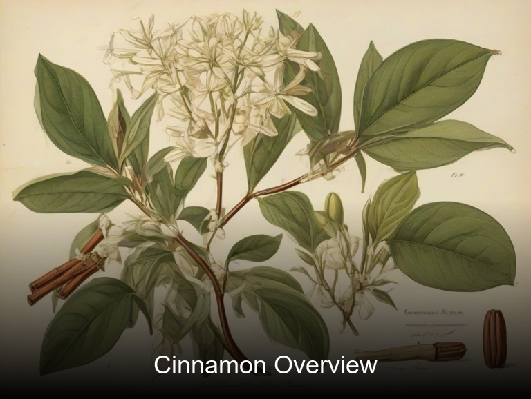
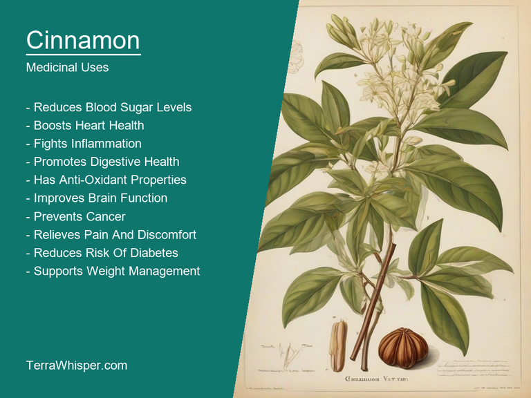
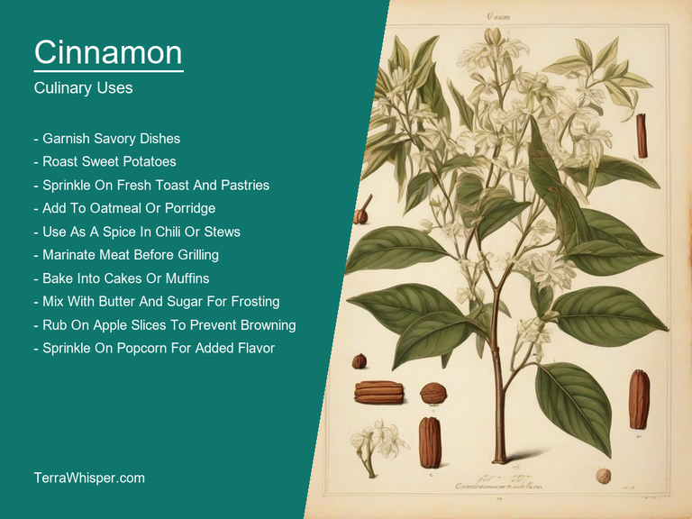
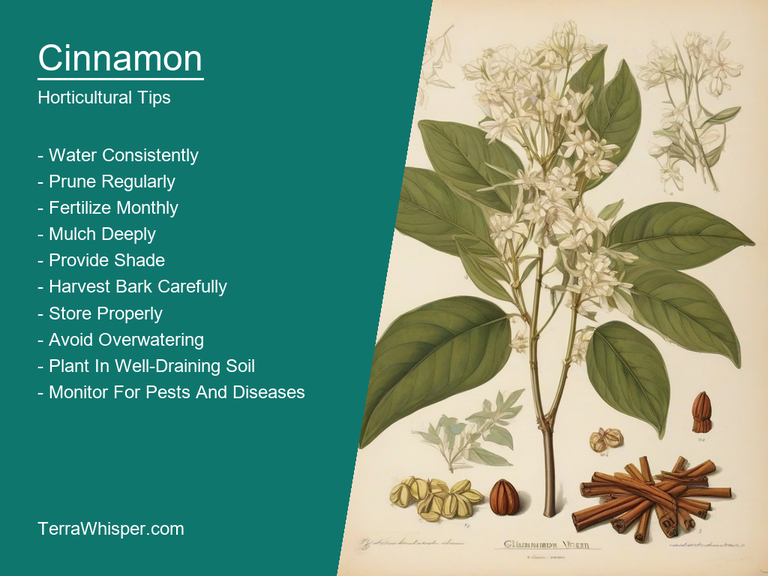
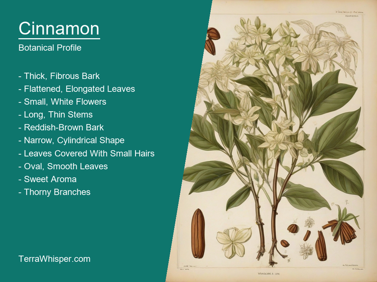
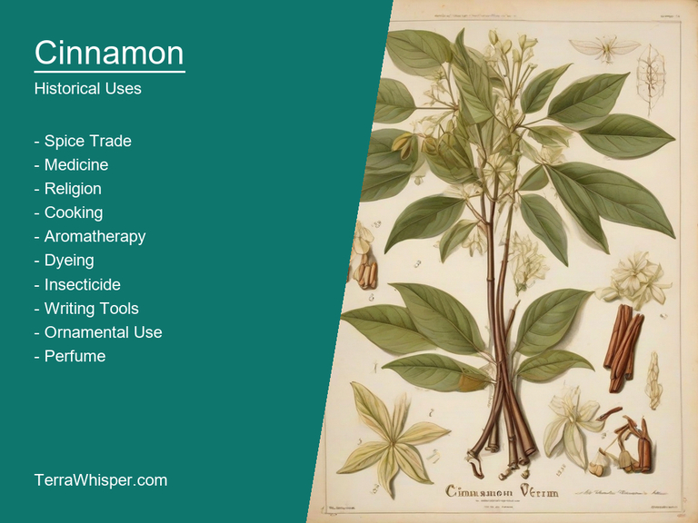

Cinnamon, scientifically known as Cinnamomum verum, is a well-known spice with both medicinal and culinary applications. It has been used for centuries in various cultures due to its rich aroma and flavor. The bark of the cinnamon tree is harvested, dried, and then rolled into long strips that we recognize as cinnamon sticks. This plant has antimicrobial and antioxidant properties, which help enhance cardiovascular health, boost immunity, and aid in digestion.
As an ornamental plant, Cinnamomum verum presents an appealing look with its leathery green leaves and small white flowers. It is often grown as a hedge plant due to its dense growth habit, making it a suitable choice for landscaping purposes. This beautiful plant can also be used in bonsai culture, where skilled growers train the trees into small containers or pots.
Cinnamon has a fascinating botanical history that dates back several centuries. It is native to Southeast Asia, and its cultivation spread to countries such as Sri Lanka, India, and Madagascar. The spice was highly valued by ancient Egyptians who considered it a symbol of purity and life itself. Today, cinnamon is one of the most popular spices globally, often featured in various cuisines and used for its health benefits.
In this article, you will discover what are the medicinal and culinary uses of cinnamon. Then, you'll learn how to cultivate it, what is its botanical profile, and how it was used historically.
Cinnamon (Cinnamomum verum) has many health benefits, including its ability to improve blood circulation, lower blood sugar levels, aid digestion and even reduce inflammation. It is also well known for its antioxidant properties that help protect the body from harmful free radicals.
The following illustration lists the most important uses of cinnamon in medicine.

The medicinal constituents found in cinnamon are mainly responsible for these benefits. These include essential oils such as eugenol, eugenyl acetate, and cinnamaldehyde; phenolic compounds like cinnamic acid derivatives (such as cinnamates, coumarins, and lignans); polyphenols which serve as antioxidants; and volatile organic compounds including methyl chavicol and dihydrocinnamaldehyde.
The most commonly used parts of the cinnamon plant for medicinal purposes are its bark, leaves, and essential oils. Cinnamon's bark is often ground into a powder or made into capsules to be taken as supplements. Its essential oil can also be extracted through distillation to utilize cinnamaldehyde, which is responsible for the spice's sweet and warm aroma.
Some potential side effects of consuming cinnamon include allergic reactions for certain people with sensitivity towards it or other spices from the same family (like basil). Excessive consumption might also lead to negative gastrointestinal symptoms such as nausea, vomiting, and diarrhea. In addition, high doses of cinnamon can interact with certain medications like blood thinners and diabetic drugs, so it is always crucial to consult a doctor before incorporating it into your daily routine.
To minimize any possible side effects, it's essential to adhere to safe cinnamon consumption guidelines. These include limiting the intake of cinnamon supplements or using ground cinnamon in cooking and baking in moderation. Avoid consuming too much at once, and consult with a healthcare professional if you experience symptoms. Additionally, pregnant women, nursing mothers, and individuals with underlying health conditions should be more cautious when using cinnamon products as they may have adverse reactions to it.
Cinnamon, scientifically known as Cinnamomum verum, is a versatile spice used extensively in culinary applications due to its flavor-packed warmth and aroma. This sweet yet slightly bitter spice is obtained from the inner bark of the cinnamon tree, which belongs to the laurel family (Lauraceae). It is widely used in various cuisines worldwide, including Middle Eastern, Indian, North American, European, and Latin American food traditions.
The following illustration lists the most common uses of cinnamon for culinary purposes.

Cinnamon has a unique and multilayered flavor profile that includes notes of sweetness, warmth, spiciness, and hints of citrus and clove. It creates mouth-watering sensations with its distinct fragrance. This combination of flavors makes it an ideal ingredient for enhancing the taste of both savory and sweet dishes, including soups, stews, breads, desserts, beverages, and even main courses such as fish and meat dishes.
The edible part of the cinnamon tree is its inner bark, which is harvested from the trunk and branches. This bark is dried, rolled, or peeled into the quills or sticks that we are familiar with in cooking and baking. Its taste remains more concentrated when it's ground to a fine powder before usage; therefore, both forms of cinnamon can be used interchangeably according to individual preferences.
There are certain culinary tips associated with using cinnamon in cooking. For instance, it is essential to remember that cinnamon should not be added too early during the cooking process as its flavor might become overpowering. It's best to add it towards the end of cooking or just before serving for a subtle yet flavorful outcome. When incorporating cinnamon into sweet dishes, it's crucial to maintain a balance between the sweetness and spiciness to create well-rounded flavors.
Culinary cinnamon is generally considered safe but some may experience side effects such as allergies or sensitivity towards the strong spiciness of the spice. There have also been concerns about potential toxicity due to the presence of essential oils like eugenol, which can be harmful if ingested in large quantities. As with all herbs and spices, consuming moderate amounts is recommended, following a healthy diet and consulting a healthcare professional when necessary.
To grow Cinnamon (Cinnamomum verum), start with a healthy nursery sapling at least 30 cm tall and carefully plant it in well-draining soil. Provide partial shade and water regularly, ensuring the roots remain moist without saturation.
The following illustration lists the most important tips to cutlitvate cinnamon.

The ideal growing conditions for Cinnamon are temperatures between 18 to 27°C with high humidity (70 to 80%) throughout the year. It prefers a slightly acidic soil pH ranging from 5.5 to 6.5, which can be achieved by adding organic matter like compost or aged manure.
Regular pruning and thinning of branches is essential for optimal growth and harvest of healthy buds. Fertilize with a balanced fertilizer once every two months during the growing season. Harvest the cinnamon sticks at the correct timing after new branches start growing in early summer to ensure maximum flavor and aroma.
Cinnamon, with botanical name Cinnamomum verum, belongs to the domain Eukaryota, Kingdom Plantae, Phylum Spermatophyta, Class Magnoliopsida, Order Laurales, Family Lauraceae, Genus Cinnamomum and Species verum. It is commonly known as True Cinnamon or Sri Lanka cinnamon.
The following illustration display the botanical profile of cinnamon.

The two variants of Cinnamon are Cassia vera or Saigon Cinnamon and Ceylon Cinnamon or Cinnamomum zeylanicum. While both have similar appearances, the primary difference is in their geographical distributions – Ceylon Cinnamon originates from Sri Lanka (as it can infer from its name), whereas Cassia vera is a relative newcomer to the spice world and has been cultivated for over two centuries mainly in China, Vietnam, and Indonesia.
The morphology of Cinnamon includes a tree that grows about fifteen feet to as tall as fifty feet high with smooth, greyish bark and oval-shaped leaves. Flowers are small and delicate greenish-white in color, while the fruit is a small, dark red berry containing one seed or an embryo. The characteristic feature of Cinnamon is its aromatic, curled, brown inner bark which has an abundance of essential oil, cinnamaldehyde, that gives it the warm and spicy scent commonly associated with the spice.
Geographically, True Cinnamon or Ceylon Cinnamon can be found mainly in tropical climates, particularly in Sri Lanka, South India, and the Caribbean islands. It thrives in well-drained soil in moderately warm regions receiving both ample sunlight and rainfall throughout the year. The Cassia vera variant is grown mostly in China, Vietnam, and Indonesia.
The life cycle of Cinnamon involves germinating its seed or embryo after which it takes years for the tree to grow large enough and start producing flowers. It reproduces through sexual means with the help of pollinators such as bees, birds, and butterflies. The spice comes from the inner bark, which is harvested by stripping off the outer bark using a special tool called a 'kokken', before curing and drying.
The history of cinnamon extends to the time of ancient civilizations. This spice was considered valuable and highly prized due to its various medicinal uses and diverse properties, which were discovered over centuries. In traditional medicine, practitioners believed that cinnamon could treat ailments such as coughs, asthma, toothache, sore throats, and even help with digestion. It also served as an antiseptic for wounds and as an aromatic component in perfumes.
The following illustration lists the most well known historical uses of cinnamon.

Cinnamon had other uses beyond just healing; it played a significant role in divination practices as well. In ancient societies, the spice was believed to possess mystical powers that allowed users to foresee future events or receive divine guidance through various ritual techniques. It was often mixed with other herbs and burned during ceremonies for this purpose.
Finally, there are numerous legends surrounding cinnamon's origins and its journey from the East to the West. One story originated in Sri Lanka, where it is said that cinnamon was initially a plant only grown by the gods. However, one day, an unfortunate hunter accidentally disturbed this divine garden, causing the gods to banish him for his transgression. As punishment, he became cursed with a never-ending hunger and thirst which could only be satisfied if he could find cinnamon outside of its sacred domain. In his quest, the hunter succeeded, thereby bringing the spice to human civilization.